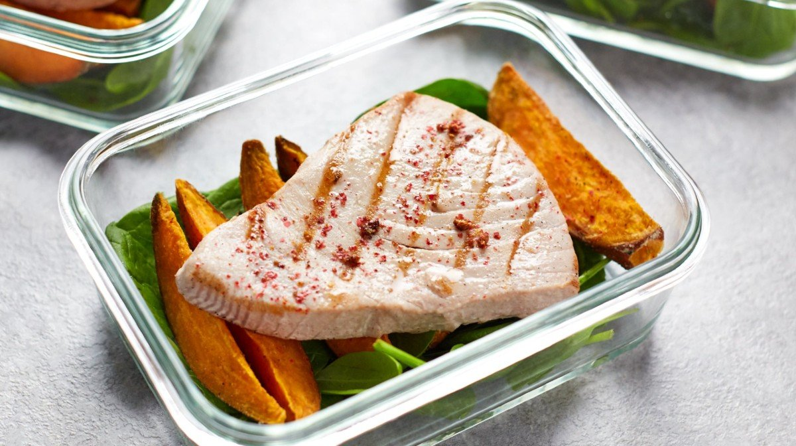

Seared Tuna & Sweet Potato

A juicy tuna steak will hit you with an impressive 33g of protein with less than 1.8g of fat. Oh, and it's packed with plenty of important, heart-healthy omega-3 fatty acids. We think that's a catch.
Ingredients
- 4 x 150g tuna steaks
- 1 tsp. coarse sea salt
- 4 large sweet potatoes
Steps:
- First, preheat your oven to 200°C.
- Then, prepare the sweet potatoes. Scrub clean each potato and prick all over with a fork. Place onto a microwavable plate and microwave on high for 4-5 minutes, then remove from the microwave and allow to cool for a minute or two.
- Once cool enough to touch, cut the sweet potatoes into wedges. Sprinkle the flour, salt, pepper and melted coconut oil over the wedges and shake them about a little to coat them (this will make them super-crispy). Pop them onto a baking tray and bake at 200°C for 15-20 minutes.
- When the sweet potato fries are nearly ready, it's time to cook your tuna steaks. Coat each steak with melted coconut oil on both sides, then sprinkle with salt, and place in a large frying or griddle pan that's already been over the heat for a minute or so.
- Fry the tuna steaks on each side for a 1-2 minutes if you prefer seared tuna, or 3-4 minutes on each side if you prefer it cooked through.
- Prepare your meal prep boxes with a bed of salad or spinach leaves, then divide up the sweet potato wedges and finally add a tuna steak. Sprinkle the steak with crushed pink peppercorns and serve with a lemon wedge.
Return to Main Page